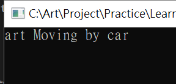
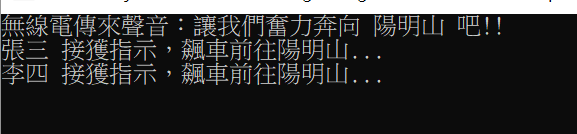
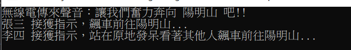
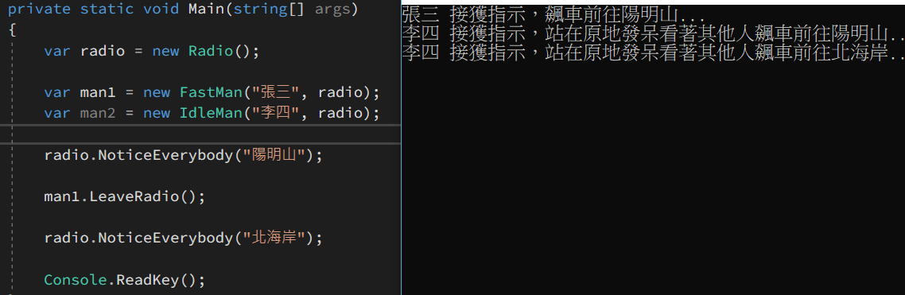

用自己的方式理解觀察者模式，並嘗試撰寫 C# 範例程式碼說明
物件導向程式設計中通常都會遵循單一職責等設計原則，所以通常會有一個一個的物件負責處理某一件事情，而在撰寫開發的時候，通常就會在程式內去直接 new 物件實體出來，這就導致了程式相依於該物件實體，因為寫死在裡面了，動不了。
舉例來說：在主程式內我們希望有一個 People，並且讓這個人去移動，程式碼如下
1 2 3 4 5 6 7 8 9 10 11 12 13 14 15 16 17 18 19 20 21 22 23 24 25 26 27 28 29 30 31 32 33 internal class Program { private static void Main (string [] args var people = new People("art" ); people.Move(); } } public class People { public string Name { get ; } public People (string name Name = name; } public void Move ( var myCar = new Car(); myCar.Drive(this ); } } internal class Car { public void Drive (People people ) Console.WriteLine($"{people.Name} Moving by car" ); } }

這當然違反了開放封閉原則，未來如果你想要更換別的物件實體，就必須要重新去修改那一段寫死的程式，而且是要修改 Lib ，也因此，通常都會利用一些技巧，讓程式內不要出現 new 這件事情，而其中一種方法，就是透過注入的方式去處理
將原本程式依賴某些物件的這個部分，把這個控制權從程式內部改為從外部傳進來，也就是程式依賴的物件實體改由注入取得 。只要能夠達到這個目標，手段怎麼做那就是看情況、需求來調整，有透過建構式注入的，也有直接透過屬性注入的，當然也有透過方法來注入的。
以上面的例子來說，我們在主程式內先將交通工具準備好，再把交通工具交給人，接著讓人去移動。
1 2 3 4 5 6 7 8 9 10 11 12 13 14 15 16 17 18 19 20 21 22 23 24 25 26 27 28 29 30 31 32 33 34 35 36 37 38 39 40 41 42 43 internal class Program { private static void Main (string [] args var car = new Car(); var people = new People("art" ); people.Drive(car); people.Move(); Console.ReadKey(); } } public class People { private Car _myCar; public string Name { get ; } public People (string name Name = name; } public void Move ( _myCar.Drive(this ); } public void Drive (Car car ) _myCar = car; } } public class Car { public void Drive (People people ) Console.WriteLine($"{people.Name} Moving by car" ); } }
第二個版本已經將交通工具，改由主程式建立，然後傳遞給人，所以也新增加了一個 Drive() 方法，讓交通工具先保存在 People 內，而等到 Move() 的時候，就直接調用剛才注入的交通工具來執行，所以產生依賴物件的控制權不再由 Move() 方法內直接實作，而是相依於外部注入的實體，這樣的行為我們就稱呼它叫做依賴注入
當然還可以有更多的版本繼續走下去，還有很多要改善的地方，但是這個 part 我們只要先搞懂依賴注入是怎麼一回事就夠了
接著我們換到另外一個情境，看看透過剛才學到的技巧，應該怎麼實作
嗯，就繼續剛才的交通工具好了，現在的情況是這樣的，有一群小夥子在飆車，每一個飆車族手上都有個無線電，一開始飆車的時候，每個人都必須要先調整到同一個無線電的頻道，而飆車地點從無線電公布，這樣大家才聽得到。聽到了就會一窩蜂的往那邊飆過去，所以大概會有幾個類別：
無線電：需要廣播飆車的地點 ( Notice )
1 2 3 4 5 6 7 8 9 10 11 12 13 14 15 16 17 18 19 20 21 22 23 24 25 26 27 28 29 30 31 32 33 34 35 36 37 38 39 40 41 42 43 44 45 46 47 48 49 50 51 52 internal class Program { private static void Main (string [] args var radio = new Radio(); var man1 = new FastMan("張三" , radio); var man2 = new FastMan("李四" , radio); radio.Notice("陽明山" ); Console.ReadKey(); } } public class FastMan { private readonly string _name; private readonly Radio _radio; public FastMan (string name, Radio radio this ._name = name; this ._radio = radio; _radio.SetRoger(this ); } public void CrazyMove (string place Console.WriteLine($"{_name} 接獲指示，飆車前往{place} ..." ); } } public class Radio { private readonly List<FastMan> _list = new List<FastMan>(); public void Notice (string place Console.WriteLine($"無線電傳來聲音：讓我們奮力奔向 {place} 吧!!" ); foreach (var man in _list) { man.CrazyMove(place); } } public void SetRoger (FastMan fastMan ) _list.Add(fastMan); } }

這邊用到的技巧就是幾個物件導向的原則，合起來就達到了這個效果，在程式碼中只要先透過 Radio 宣布飆車地點，所有人就會接收到資訊，並做出相應的行為。
把這個概念完善一點，調整頻道的動作，其實就是加入一個清單，離開頻道，就是從清單中移除；廣播通知的對象則依循清單中的名單處理；通知對象其實就是透過依賴注入的方式，將物件注入給 Radio；聽到的人具體要做甚麼行為，則是由聽到的自行決定；也因為不是所有人都喜歡飆車，說不定也有的人聽到之後的反應是繼續做自己的事情，所以程式碼為了要有彈性，應該要做一個介面，其他的人就實作這個介面，來實現具體的行為。
調整一下程式碼
1 2 3 4 5 6 7 8 9 10 11 12 13 14 15 16 17 18 19 20 21 22 23 24 25 26 27 28 29 30 31 32 33 34 35 36 37 38 39 40 41 42 43 44 45 46 47 48 49 50 51 52 53 54 private static void Main (string [] args var radio = new Radio(); var man1 = new FastMan("張三" , radio); var man2 = new IdleMan("李四" , radio); radio.Notice("陽明山" ); Console.ReadKey(); } public interface IRadioKeeper { void CrazyMove (string place } public class IdleMan : IRadioKeeper { private readonly string _name; private readonly Radio _radio; public IdleMan (string name, Radio radio this ._name = name; this ._radio = radio; _radio.SetRoger(this ); } public void CrazyMove (string place Console.WriteLine($"{_name} 接獲指示，站在原地發呆看著其他人飆車前往{place} ..." ); } } public class Radio { private readonly List<IRadioKeeper> _list = new List<IRadioKeeper>(); public void Notice (string place Console.WriteLine($"無線電傳來聲音：讓我們奮力奔向 {place} 吧!!" ); foreach (var man in _list) { man.CrazyMove(place); } } public void SetRoger (IRadioKeeper fastMan ) _list.Add(fastMan); } }

那接著又如果張三想回家睡覺，不想要飆車了怎麼辦？所以我們要幫它做一個離開無線電頻道的方法，而因為這個方法不只張三用，李四可能也會用，所以我們應該將它放在介面，讓繼承的類別實作，實作細節就是呼叫 radio 的一個方法，讓廣播的對象清單移除掉。而 radio 類別，為了相依介面，我們也應該將它抽象成為介面、或是抽象類別
最終程式碼在整理一下，大概會是這樣子，因為先前例子沒有寫得很好，順便把一些名稱重新命名了
1 2 3 4 5 6 7 8 9 10 11 12 13 14 15 16 17 18 19 20 21 22 23 24 25 26 27 28 29 30 31 32 33 34 35 36 37 38 39 40 41 42 43 44 45 46 47 48 49 50 51 52 53 54 55 56 57 58 59 60 61 62 63 64 65 66 67 68 69 70 71 72 73 74 75 76 77 78 79 80 81 82 83 84 85 86 87 88 89 90 91 92 93 94 95 96 97 98 99 100 101 102 103 104 105 106 107 108 109 110 111 112 private static void Main (string [] args var radio = new Radio(); var man1 = new FastMan("張三" , radio); var man2 = new IdleMan("李四" , radio); radio.NoticeEverybody("陽明山" ); man1.LeaveRadio(); radio.NoticeEverybody("北海岸" ); Console.ReadKey(); } public interface IRadioKeeper { void UpdatePlace (string place void JoinRadio ( void LeaveRadio ( } public class IdleMan : IRadioKeeper { private readonly string _name; private readonly BaseRadio _baseRadio; public IdleMan (string name, BaseRadio baseRadio this ._name = name; this ._baseRadio = baseRadio; JoinRadio(); } public void UpdatePlace (string place Console.WriteLine($"{_name} 接獲指示，站在原地發呆看著其他人飆車前往{place} ..." ); } public void JoinRadio ( _baseRadio.JoinChannel(this ); } public void LeaveRadio ( _baseRadio.LeaveChannel(this ); } } public class FastMan : IRadioKeeper { private readonly string _name; private readonly BaseRadio _baseRadio; public FastMan (string name, BaseRadio baseRadio this ._name = name; this ._baseRadio = baseRadio; JoinRadio(); } public void UpdatePlace (string place Console.WriteLine($"{_name} 接獲指示，飆車前往{place} ..." ); } public void JoinRadio ( _baseRadio.JoinChannel(this ); } public void LeaveRadio ( _baseRadio.LeaveChannel(this ); } } public class Radio : BaseRadio { public void ChangePlace (string place Console.WriteLine($"無線電傳來聲音：讓我們奮力奔向 {place} 吧!!" ); NoticeEverybody(place); } } public abstract class BaseRadio { private readonly List<IRadioKeeper> _list = new List<IRadioKeeper>(); public void NoticeEverybody (string place foreach (var man in _list) { man.UpdatePlace(place); } } public void JoinChannel (IRadioKeeper man ) _list.Add(man); } public void LeaveChannel (IRadioKeeper man ) _list.Remove(man); } }

好囉，我們剛才已經把觀察者模式實作完畢了，讓我們來看一下觀察者模式 的定義：一個目標物件管理所有相依於它的觀察者物件，並且在它本身的狀態改變時主動發出通知
所以我們除了radio.NoticeEverbody("somewhere"); 的實作，沒有與 wiki 上的定義相符合，而是每一次都通知，但是實作模式切記不能生搬硬套，主要還是要看情境，你說不說的出來，為甚麼你要這樣寫，而不是怎樣怎樣。
我當然可以說因為我的情境是飆車族、通知的方法是無線電，就像聊天室一樣我說甚麼就通知甚麼，不管我這次說的話跟上次說的話一不一樣都要通知。
但如果我的情境不是這個，而是在一些伺服器的狀態更新之類的，那麼當然是我的狀態有更新，才需要發出 Request 給觀察者，所以就像 Bill 每次都會提到的獨孤九劍，沒有一定的形式，招要活學活使。
透過上面的步驟，大概也能夠理解到設計模式其實都是用物件導向原則組合出來的，怎麼組合的或許每個人的作法都有一些不同，但重要的是目的與情境有沒有滿足。希望大家學習設計模式的時候不要看著圖生搬硬套，應該從目的著手，
設計模式其實都是基於物件導向原則的一個實作出來的方式，只要達到目的，怎麼完成的方式其實並不重要